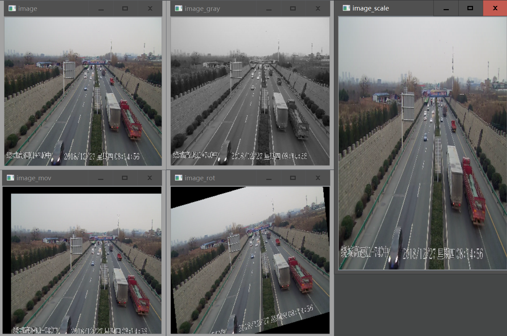

OpenCV 培训¶
版本信息
Version 1.0.2 lastUpdateTime：2019-07-10 09:49
- 增加版本信息;
- 增加中文搜索功能;
- 更新简介;
- 更新example 2 注释;
- 修改example 3 关键词错误;
此资料主要用于培训期间常用OpenCV函数的快速上手。因时间精力有限，详细资料请查看：
-
OpenCV Documentation (Online,根据个人安装的版本查找对应的文档)
-
OpenCV-Python Tutorials (Online,OpenCV-python官方教程)
-
OpenCV_Computer_Vision_with_Python (PDF电子书,版本较老,对于新版本参考作用有限)
-
Python Code Examples (Python 代码示例搜索. 输入‘cv2’,可检索opencv常见module的用例)
简介¶
- OpenCV是一个开源(BSD license)跨平台(Linux,Windows, OS_X,Android,IOS)计算机视觉库;
- 支持多种编程语言(C++,Java,Python,C#,Go);
- 支持各种常见图像处理,计算机视觉,机器学习算法以及应用;
- 底层由C,C++实现,轻量且高效;
OpenCV-Python是OpenCV的python api;
安装¶
- 方式一：在python安装目录的Scripts文件夹下,用pip或者conda工具安装。
'''以下语句,根据需要选择一句执行即可''' # 使用pip工具 pip install opencv-python # 使用conda工具 conda install -c menpo opencv=3.4.0 conda install -c conda-forge opencv=3.4.0 # 使用pip安装指定版本opencv pip install opencv-python==3.4.0
注意
opencv3.0版本后的api接口分成了main module和extra module两部分,pip install opencv-python通常仅安装了main module. 部分功能如background extraction,optical flow,object tracking等因不在main module中无法使用,需要通过pip install opencv-contrib-python安装包含main module和extra module(具体那些功能属于main module与extra module,需要查看具体版本的OpenCV document)
- 方式二：通过wheel文件安装。
- 下载对应平台与python版本的wheel文件，例如：https://pypi.org/project/opencv-contrib-python/#files；
- 进入wheel文件下载目录,安装wheel文件
# 进入wheel下载目录(假设C:\python35为文件下载目录) cd C:\python35 # 文件安装 pip install opencv_contrib_python-4.1.0.25-cp35-cp35m-win_amd64.whl
- 测试
import cv2 cv2.__version__
 结果若如上图所示，则表明安装成功。
结果若如上图所示，则表明安装成功。
注意
详细安装与使用方法以及常见问题解决方法可参考： https://pypi.org/project/opencv-contrib-python/
示例¶
本次培训包括以下示例内容：
- Example 1: 图像读写;
- Example 2: 视频读写;
- Example 3: 图像变换;
- Example 4: 图像分析;
- Example 5: 图像绘制;
- Example 6: GUI;
Example 1¶
''' Example 1：图像读入,显示,保存; ''' import os import cv2 os.chdir(os.path.dirname(__file__)) # 图像读入 image = cv2.imread("MyPic.png") # 直接以灰度图形式载入图像 image_gray = cv2.imread("MyPic.png",cv2.IMREAD_GRAYSCALE) # 不变 image_unchange = cv2.imread("MyPic.png",cv2.IMREAD_UNCHANGED) # 建立图像显示窗口 cv2.namedWindow("display",cv2.WINDOW_NORMAL) # 显示图像 cv2.imshow("display",image) # 等待操作 cv2.waitKey() # 图像保存 cv2.imwrite("MyPic.jpg",image)
1- 图像读入
retval = cv2.imread(filename,flags)
| 序号 | 关键字 | 色彩空间 |
|---|---|---|
| 1 | IMAGE_COLOR | BGR |
| 2 | IMAGE_GRAYSCALE | 灰度 |
| 3 | IMAGE_UNCHANGED | 与原图相同 |
注意
- 文件中不要包含中文字符;
- OpenCV以B,G,R的顺序读入颜色通道, 与有些库以RGB读入的顺序不同(如Matplotlib). 不同库处理图像时,需要注意库对图像通道定义,若需要RGB颜色顺序,则需要对颜色空间进行变换.变换方法见 Example 3.
2- 图像显示
cv2.namedWindow(winname,flags) # 默认flags=CV_WINDOW_AUTOSIZE| CV_WINDOW_KEEPRATIO cv2.imshow(winname,mat) # 可通过Ctrl+C复制图像至剪贴板,通过Ctrl+S弹出保存对话框 cv2.waitKey(delay) # delay为停顿毫秒数. 0表示等待用户操作.
namedWindow flags 常见设置
| 序号 | 关键字 | 属性 |
|---|---|---|
| 1 | WINDOW_NORMAL | 窗口可调 |
| 2 | WINDOW_AUTOSIZE | 窗口自适应 |
| 3 | WINDOW_FREERATIO | 不保持横纵比 |
| 4 | WINDOW_KEEPRATIO | 保持横纵比 |
3- 图像保存
retval = cv2.imwrite(filename,image,flags)
提示
也可以在显示图像的窗口中,通过键盘按下Ctrl+S,在弹出的文件保存对话框中输入保存文件的路径与名称保存.
Example 2¶
''' Example 2: 视频读入与保存 ''' import os import cv2 os.chdir(os.path.dirname(__file__)) # 视频读入 # 读入本地视频文件 cameraCapture = cv2.VideoCapture("MyVideo.mp4") # 读入本地摄像机视频流 cameraCapture = cv2.VideoCapture(0) # 读入网络视频流(RTSP协议)【大雄兔动画片-点播】 cameraCapture = cv2.VideoCapture("rtsp://184.72.239.149/vod/mp4://BigBuckBunny_175k.mov") # 读入网络视频流(RTMP协议)【香港卫视-直播】 cameraCapture = cv2.VideoCapture("rtmp://live.hkstv.hk.lxdns.com/live/hks1") # 读入网络视频流(HTTP协议)【CCTV1-直播】 cameraCapture = cv2.VideoCapture("http://223.110.242.130:6610/gitv/live1/G_CCTV-1-HQ/1.m3u8") cv2.namedWindow("display",cv2.WINDOW_NORMAL) #视频保存 fourcc = cv2.VideoWriter_fourcc('X','V','I','D') # 视频编码配置 videoWriter = cv2.VideoWriter('output.mp4', fourcc, 25, (480,320)) # 视频保存配置 # 连续播放视频帧图像 while True: # 从视频流中读取一帧图像 success, frame = cameraCapture.read() if success: # 显示图像 cv2.imshow("display",frame) # 将帧图像添加到视频保存序列中 img = cv2.resize(frame,(480,320)) # 非必须 videoWriter.write(img) # 交互 if cv2.waitKey(1)==27: # 按'ESC'键后退出程序 break # 视频结束/读取错误后退出 else: break # 释放writer videoWriter.release()
1- 视频读入
OpenCV可读入本地图片序列、视频文件、摄像头视频流以及网络视频流数据(如RTSP、RTMP、HTTP、UDP)
# 返回一个对象 <VideoCapture object> = cv2.VideoCapture() <VideoCapture object> = cv2.VideoCapture(filename) <VideoCapture object> = cv2.VideoCapture(url) # 读入方法 success, frame = videoCaptureobject.read() # 读入一帧图像
- success: 视频帧读入状态,
- frame: 视频帧图像
2- 视频保存
# 编码设置 fourcc = cv2.VideoWriter_fourcc(c1, c2, c3, c4) # 保存设置 <VideoWriter object> = cv2.VideoWriter(filename, fourcc, fps, frameSize)
c1,c2,c3,c4常见设置
| 序号 | 关键字 | 编码 |
|---|---|---|
| 1 | cv2.VideoWriter_fourcc('I','4','2','0') | YUV编码 |
| 2 | cv2.VideoWriter_fourcc('P','I','M','1') | MPEG-1编码 |
| 3 | cv2.VideoWriter_fourcc('X','V','I','D') | MPEG-4编码 |
| 4 | cv2.VideoWriter_fourcc('F','L','V','1') | Flash编码 |
Example 3¶
''' Example 3: 图像变换 ''' import os import cv2 import numpy as np os.chdir(os.path.dirname(__file__)) # 图像读入 image = cv2.imread("MyPic.png") # cv2.IMREAD_COLOR # 色彩空间变换 image_gray = cv2.cvtColor(image,cv2.COLOR_BGR2GRAY) # 尺度变换 image_scale = cv2.resize(image,(320,480)) # 位移 M1 = np.float32([[1,0,100],[0,1,50]]) image_mov = cv2.warpAffine(image,M1,(image.shape[1],image.shape[0])) # 图像旋转 print(image.shape) M2 = cv2.getRotationMatrix2D((960,540),10,1) image_rot = cv2.warpAffine(image,M2,(image.shape[1],image.shape[0])) # 图像显示 cv2.namedWindow("image",cv2.WINDOW_NORMAL) # 窗口支持手动调整尺度 cv2.namedWindow("image_gray",cv2.WINDOW_NORMAL) # 窗口支持手动调整尺度 cv2.namedWindow("image_scale") cv2.namedWindow("image_mov",cv2.WINDOW_NORMAL) cv2.namedWindow("image_rot",cv2.WINDOW_NORMAL) cv2.imshow("image",image) cv2.imshow("image_gray",image_gray) cv2.imshow("image_scale",image_scale) cv2.imshow("image_mov",image_mov) cv2.imshow("image_rot",image_rot) cv2.waitKey()
 Example 3 图像变换效果展示
1- 色彩空间变换
dst = cv2.cvtColor(src,flags)
cvtColor flags 常见设置
| 序号 | 关键字 | 属性 |
|---|---|---|
| 1 | COLOR_BGR2RGB | BGR顺序转RGB |
| 2 | COLOR_BGR2GRAY | 转为灰度图 |
2- 图像缩放
dst = cv2.resize(src, dsize, dst, fx, fy, interpolation) #默认值:fx=0,fy=0,interpolation=cv2.INTER_LINEAR
dsize: 输出图像的尺寸(w,h)
fx : 横轴尺度因子,如果fx=0,则 double(dsize.width/src.cols)
fy : 纵轴尺度因子,如果fy=0,则 double(dsize.height/src.rows)
resize interpolation 常见设置
| 序号 | 关键字 | 属性 |
|---|---|---|
| 1 | INTER_NEAREST | 邻近插值 |
| 2 | INTER_LINEAR | 双线性插值(效果一般,快) |
| 3 | INTER_CUBIC | 双三次插值(效果好,慢) |
3- 仿射变换
仿射变换即保证线共点、点共线以及线间平行关系不变的几何变换。包括平移、缩放、剪切、旋转等效果。
dst = cv2.warpAffine(src, M, dsize)
变换矩阵常见设置
| 序号 | 变换矩阵 | 属性 |
|---|---|---|
| 1 | \left[\begin{matrix}1&0&0\\0&1&0\\0&0&1 \end{matrix}\right] | 不变 |
| 2 | \left[\begin{matrix}1&0&X\\0&1&Y\\0&0&1 \end{matrix}\right] | x方向平移X,y方向平移Y |
| 3 | \left[\begin{matrix}W&0&0\\0&H&0\\0&0&1 \end{matrix}\right] | x方向放大W倍,y方向放大H倍 |
| 4 | \left[\begin{matrix}cos\theta&sin\theta&0\\-sin\theta&cos\theta&0\\0&0&1 \end{matrix}\right] | 以(0,0)为基点,顺时针旋转\theta |
| 5 | \left[\begin{matrix}1&0&0\\0&-1&0\\0&0&1 \end{matrix}\right] | 垂直翻转 |
| 6 | \left[\begin{matrix}-1&0&0\\0&1&0\\0&0&1 \end{matrix}\right] | 水平翻转 |
Example 4¶
''' Example 4: 图像分析 ''' import os import cv2 import numpy as np os.chdir(os.path.dirname(__file__)) # 图像读入 image = cv2.imread("MyPic.png") # cv2.IMREAD_COLOR image_gray = cv2.cvtColor(image,cv2.COLOR_BGR2GRAY) # 图像分割 ret, image_bw = cv2.threshold(image_gray, 127, 255, cv2.THRESH_BINARY) # 边缘检测 image_canny = cv2.Canny(image_gray, 100, 300) # Hough变换 minLineLength = 100 maxLineGap = 20 lines = cv2.HoughLinesP(image_canny, 1, np.pi / 180, 100, minLineLength, maxLineGap) image_hough = image.copy() for elem in lines: x1,y1,x2,y2 = elem[0] cv2.line(image_hough, (x1, y1), (x2, y2), (0, 255, 0), 5) # 角点 # 图像显示 cv2.namedWindow("image",cv2.WINDOW_NORMAL) # 窗口支持手动调整尺度 cv2.namedWindow("image_bw",cv2.WINDOW_NORMAL) # 窗口支持手动调整尺度 cv2.namedWindow("image_canny",cv2.WINDOW_NORMAL) # 窗口支持手动调整尺度 cv2.namedWindow("image_hough",cv2.WINDOW_NORMAL) # 窗口支持手动调整尺度 cv2.imshow("image",image) cv2.imshow("image_bw",image_bw) cv2.imshow("image_canny",image_canny) cv2.imshow("image_hough",image_hough) cv2.waitKey()
 Example 4 图像分析效果展示
Example 4 图像分析效果展示
1- 图像分割
图像分割就是提取图像感兴趣目标/区域的过程.
# 固定阈值二值化 ret, dst = cv2.threshold(src, thresh, maxval,flags) #thresh为阈值,maxval当像素值超过了阈值时的设定值,flags为操作类型
threshold flags 常见设置
| 序号 | 关键字 | 属性 |
|---|---|---|
| 1 | THRESH_BINARY | src(x,y)>thresh,dst(x,y)=max_value,反之dst(x,y)=0 |
| 2 | THRESH_BINARY_INV | src(x,y)>thresh,dst(x,y)=0,反之dst(x,y)=max_value |
| 3 | THRESH_TRUNC | src(x,y)>thresh,dst(x,y)=max_value,反之dst(x,y)=src(x,y) |
| 4 | THRESH_TOZERO | src(x,y)>thresh,dst(x,y)=src(x,y),反之dst(x,y)=0 |
| 5 | THRESH_TOZERO_INV | src(x,y)>thesh,dst(x,y)=0,反之dst(x,y)=src(x,y) |
2- 边缘检测
边缘检测的目的是识别图像中亮度变化较为明显的点。
常见的方法有三种，Sobel算子(一阶微分算子)，Laplacian算子(二阶微分算子)，Canny算子。
Canny算子的计算步骤：
-
高斯滤波平滑；
H_{ij}=\frac{1}{2\pi\sigma^2}exp(-\frac{(i-(k+1))^2+(j-(k+1))^2}{2\sigma^2});1\leq i,j\leq (2k+1)e = H*A -
计算已阶偏导的幅值和方向；
G = \sqrt{G_x^2+G_y^2} , \theta=arctan(\frac{G_y}{G_x})x,y 方向的Sobel算子
S_x= \left[ \begin{matrix}1&2&1\\0&0&0\\-1&-2&-1\end{matrix} \right], S_y= \left[ \begin{matrix}-1&0&1\\-2&0&2\\-1&0&1\end{matrix} \right]G_x=S_x*A, G_y=S_y*A -
对梯度幅值进行非最大值抑制；
-
用双阈值算法检测和连接边缘.
edges = cv2.Canny(image,threshold1, threshold2,apertureSize=3,L2gradient=false)
-
threshold1：双阈值算法中的阈值1，低于阈值1的确定不是边缘；threshold2：双阈值算法中的阈值2，高于阈值2的确定是边缘。在阈值1与阈值2之间的像素点，若与确定边缘相接，则认为是边缘否则不是。
-
apertureSize：Sobel算子的大小;
-
L2gradient：L2范数计算梯度标识，若为True，则使用L2范数计算梯度，结果精度更高；否则使用L1范数计算梯度。 L_2 norm = \sqrt{(\frac{dI}{dx})^2+(\frac{dI}{dy})^2}； L_1 norm = |\frac{dI}{dx}|+|\frac{dI}{dy}|
注意
边缘检测基于灰度图进行计算，计算之前先将色彩空间转为灰度或以单色彩通道计算.
3- Hough变换
Hough变换是检测具有特定参数形状的方法。其原理为将形状参数在hough空间中进行投票，投票结果中的局部最大值即为所要提取形状的参数。
Hough变换最简单的应用就是检测直线。
斜截式： y = mx + b， 则参数空间中的一个点(m,b)就可以表示一条直线；
Hesse法线式： r = xcos\theta+ysin\theta， 图像中的每一条直线都与hough空间中的一个点(r,\theta)关联。
对于直线检测，OpenCV提供了两种Hough变换形式。其中，标准版本为cv2.HoughLines，输入为边缘图像，输出为[float,float]形式的narray，每个值表示一条检测直线的(r,\theta). 概率Hough变换版本为cv2.HoughLinesP, 概率Hough变换为了解决像素偶然所造成的虚假检测，只检测分段直线而不是贯穿整个图像的直线。
# 标准Hough变换 lines = cv2.HoughLines(image, rho, theta, threshold, min_theta, max_theta)
-
image: 边缘图像(二值图像);
-
rho: 以像素为单位的距离精度;
-
theta: 以弧度为单位的角度精度;
-
threshold:Hough空间的累加阈值，超过阈值才被认为检测到直线;
# 概率Hough变换 lines = cv.HoughLinesP(image, rho, theta, threshold, minLineLength, maxLineGap)
-
image: 边缘图像(二值图像);
-
rho: 以像素为单位的距离精度;
-
theta: 以弧度为单位的角度精度;
-
threshold:Hough空间的累加阈值，超过阈值才被认为检测到直线;
-
minLineLength: 检出线段的最小长度阈值;
-
maxLineGap:检出线段的最大间隔阈值,同一行点与点之间连接起来的最大的距离。;
Example 5¶
''' Example 5: 图像绘制 ''' import os import cv2 import numpy as np os.chdir(os.path.dirname(__file__)) # 图像读入 image = cv2.imread("MyPic.png") # cv2.IMREAD_COLOR image_gray = cv2.cvtColor(image,cv2.COLOR_BGR2GRAY) # 创建空图像 # image_process = np.zeros_like(image) image_process = np.zeros((1080,1920,3),np.uint8) # 图像为无符号8位数 # 图像赋值 image_process[980:1080,0:1920] = [0,0,255] image_process[880:980,0:1920] = [0,255,0] image_process[780:880,0:1920] = [255,0,0] # 图像复制 image_process[480:780,0:1920] = image[480:780,0:1920] # 图像数值判断 loc = np.where(image[:,:,2]>200) image_process[loc] = [0,255,255] # 图像绘制 # 绘制直线 cv2.line(image_process,(0,0),(100,100),(255,0,255),10) cv2.line(image_process,(100,100),(0,100),(255,0,255),10) # 绘制矩形 cv2.rectangle(image_process,(0,150),(100,200),(255,0,255),10) # 绘制多边形 pts_1 = np.array([[300,150],[350,100],[400,100],[450,150],[400,200],[350,200]], np.int32) cv2.polylines(image_process,[pts_1],True,(255,255,255),5) # 填充多边形 pts_2 = np.array([[500,150],[550,100],[600,100],[650,150],[600,200],[550,200]], np.int32) cv2.fillPoly(image_process,[pts_2],(128,0,255)) # 绘制圆形 cv2.circle(image_process,(200,100),100,(255,255,0),10) # 绘制文字 cv2.putText(image_process, 'ABCDE_12345', (200,300),cv2.FONT_HERSHEY_SIMPLEX,3,(0,255,0),5) # 图像显示 cv2.namedWindow("image",cv2.WINDOW_NORMAL) # 窗口支持手动调整尺度 cv2.namedWindow("image_process",cv2.WINDOW_NORMAL) # 窗口支持手动调整尺度 cv2.imshow("image",image) cv2.imshow("image_process",image_process) cv2.waitKey()
 Example 5 图像绘制效果展示
Example 5 图像绘制效果展示
图像绘制
# 绘制直线 cv2.line(img,pt1,pt2,color,thickness) # pt1为起点,pt2为终点 # 绘制矩形 cv2.rectangle(img,pt1,pt2,color,thickness) # pt1为左上角,pt2为右下角 # 绘制圆形 cv2.circle(img,pt,radius,color,thickness) # pt为圆点 # 添加文字 cv2.putText(img,str,pt,cv2.font,fontScale,color,thickness) # pt为左上角坐标 # 绘制多边形 cv2.polylines(img,[pts],isClosed,color,thickness) # [pts]为点集 # 填充多边形 cv2.fillPoly(img,[pts],color) # [pts]为点集
-
pt1,pt2:关键点位置,形式(x,y),类型tuple;
-
color: 颜色,(v1,v2,v3)BGR三通道色彩值(0~255);
-
thickness: 线条粗细;
-
radius: 半径;
-
font: 字体;
-
fontScale: 字体大小;
-
isClosed: 多边形是否闭合;
-
[pts]: 关键点集合;
常见字体设置
| 序号 | 关键字 | 属性 |
|---|---|---|
| 1 | FONT_HERSHEY_SIMPLEX | 正常大小无衬线字体 |
| 2 | FONT_HERSHEY_PLAIN | 小号无衬线字体 |
| 3 | FONT_HERSHEY_COMPLEX | 正常大小有衬线字体 |
注意
- cv2.line(),cv2.rectangle(),cv2.circle(),cv2.putText()输入点应为tuple类型;
- cv2.polylines(),cv2.fillPoly()输入点集应为numpy.array类型;
- cv2.putText()不直接支持中文,使用时尽量避免中文标注;
- 图像数据无法直接通过赋值进行复制，通过'='对变量进行赋值时，得到只是源数据的引用地址，对赋值后的变量进行操作时，同时也对源图像数据进行了修改。需要在源图像上进行进行一系列操作但不希望破坏原始数据时，需要对源数据进行赋值.
img_add_cp = img # 引用 img_cp = img.copy() # 复制
Example 6¶
''' Example 6: GUI ''' import os import cv2 import numpy as np os.chdir(os.path.dirname(__file__)) # 创建画布图像和窗口 img = np.zeros((500, 400, 3), np.uint8) cv2.namedWindow('image') # 创建存放绘制点list points = [] # 定义回调函数 # trackbar 无操作 def trackbar_event(object): pass # 鼠标回调函数 def mouse_event(event,x,y,flags,param): global points if event == cv2.EVENT_LBUTTONDOWN: points = [] if event == cv2.EVENT_LBUTTONUP: pass if event==cv2.EVENT_MOUSEMOVE and flags==cv2.EVENT_FLAG_LBUTTON: points.append((x,y)) # 创建三个开关滑动条RBG cv2.createTrackbar('R', 'image', 0, 255, trackbar_event) cv2.createTrackbar('B', 'image', 0, 255, trackbar_event) cv2.createTrackbar('G', 'image', 0, 255, trackbar_event) cv2.setMouseCallback("image",mouse_event) while(True): r = cv2.getTrackbarPos('R', 'image') g = cv2.getTrackbarPos('G', 'image') b = cv2.getTrackbarPos('B', 'image') img[:] = [b, g, r] for i in range(len(points)-1): cv2.line(img,points[i],points[i+1],(255,255,255),5) if cv2.waitKey(10)==27: # ESC按键键码为27,即按ESC后退出 break cv2.imshow('image', img) cv2.destroyAllWindows()
 Example 6 GUI示例效果展示
Example 6 GUI示例效果展示
1- 回调函数
回调函数即回头调用的函数，主函数执行完成后，在调用传进来的函数。当特定的事件或条件发生的时候，调用者使用函数指针调用回调函数对事件进行处理
常用鼠标响应事件
| 序号 | 关键字 | 属性 |
|---|---|---|
| 1 | EVENT_LBUTTONDOWN | 鼠标左击 |
| 2 | EVENT_RBUTTONDOWN | 鼠标右击 |
| 3 | EVENT_MOUSEMOVE | 鼠标移动 |
| 4 | EVENT_LBUTTONUP | 左键释放 |
| 5 | EVENT_RBUTTONUP | 右键释放 |
| 6 | EVENT_LBUTTONDBLCLK | 左键双击 |
| 7 | EVENT_RBUTTONDBLCLK | 右键双击 |